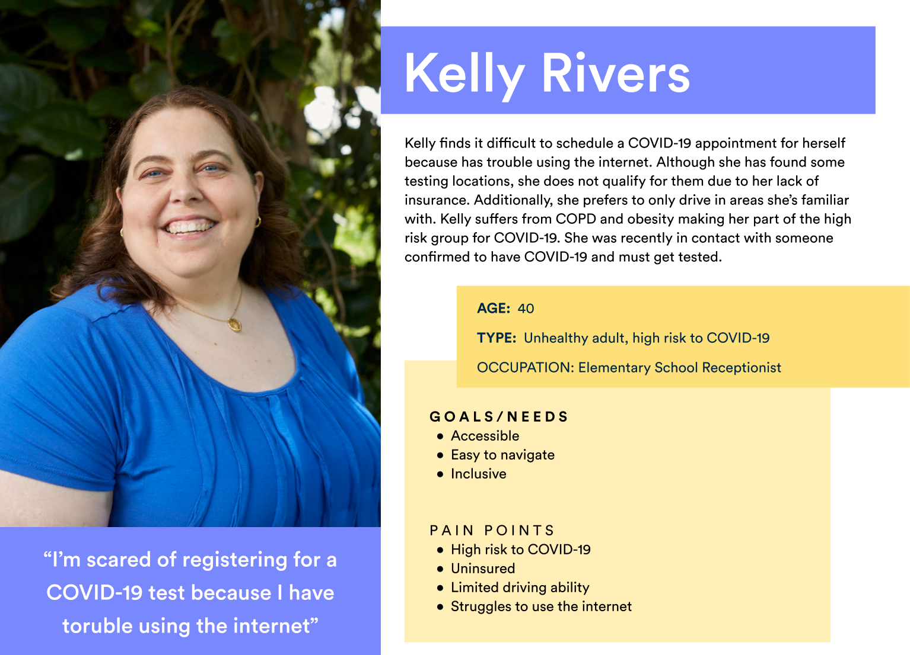
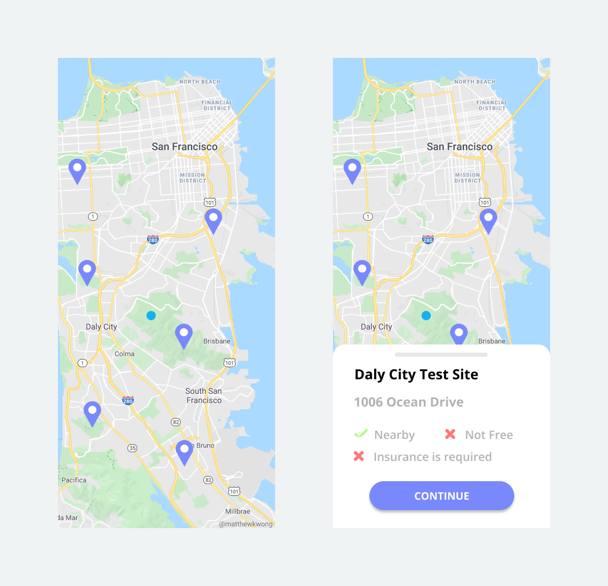
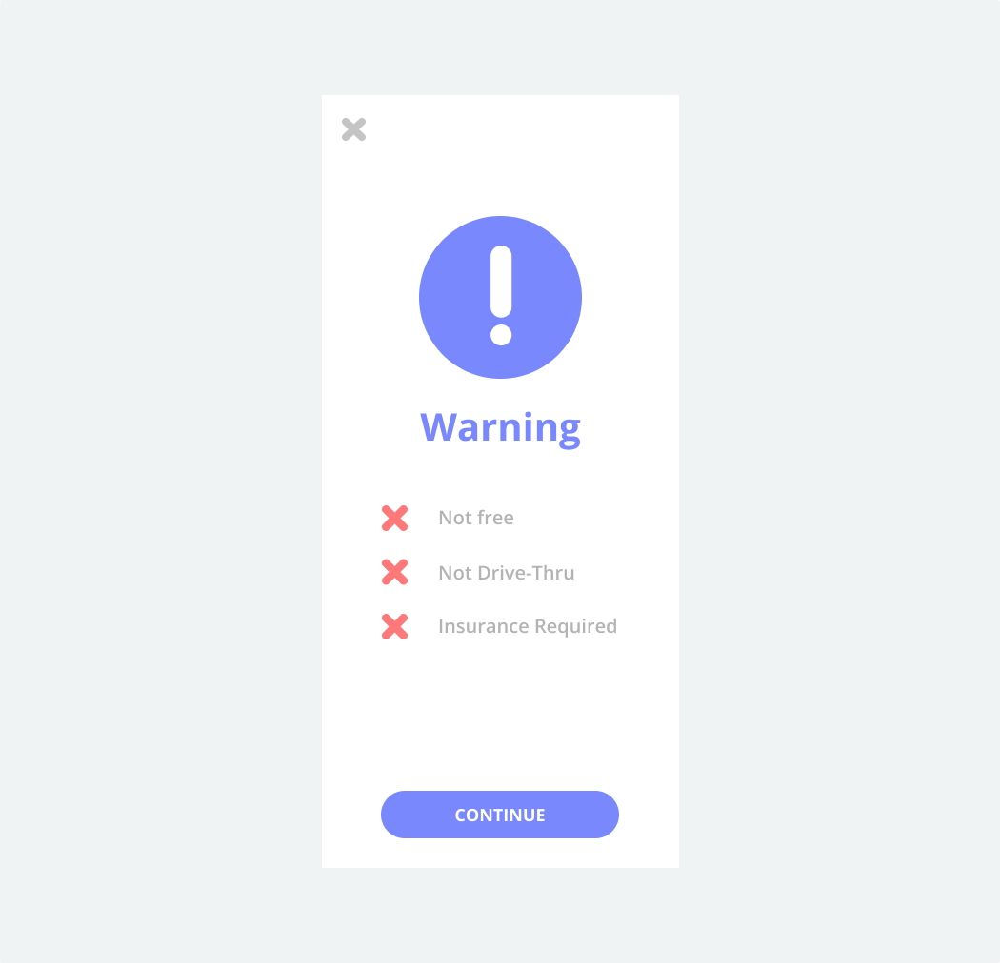
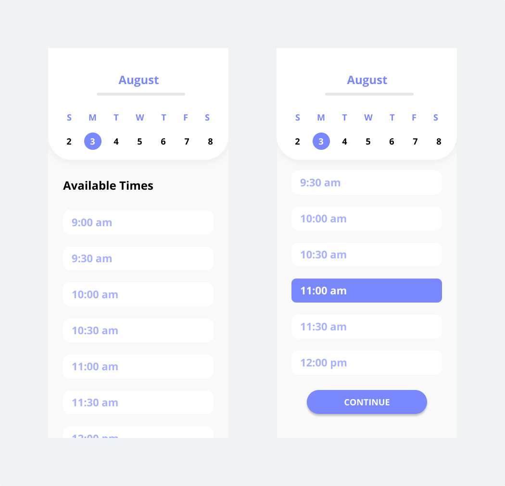
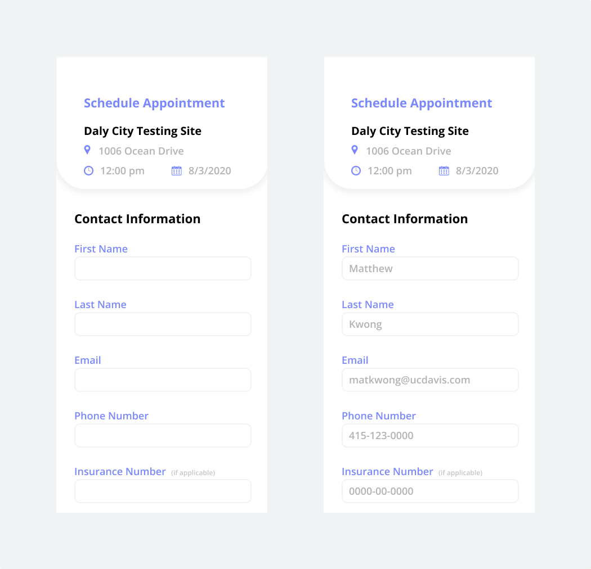
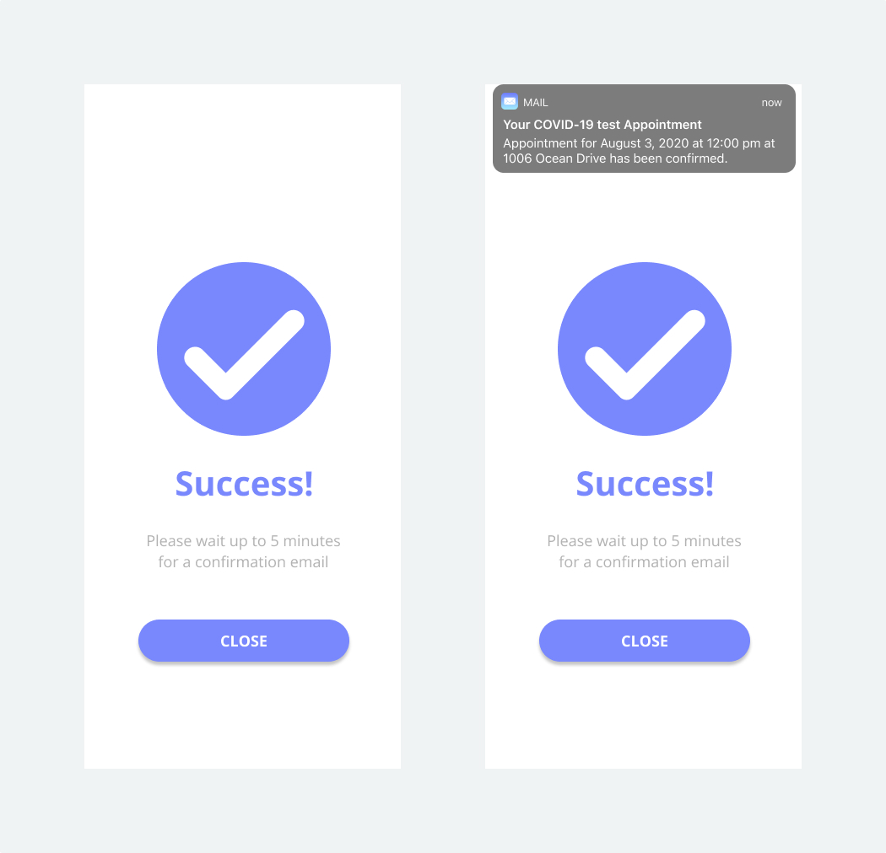
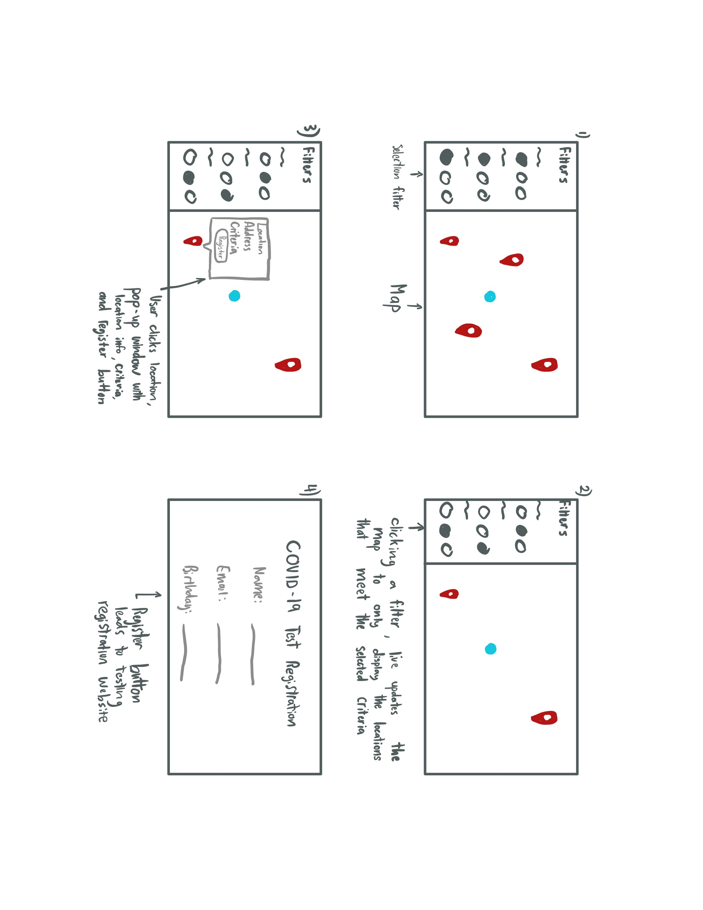
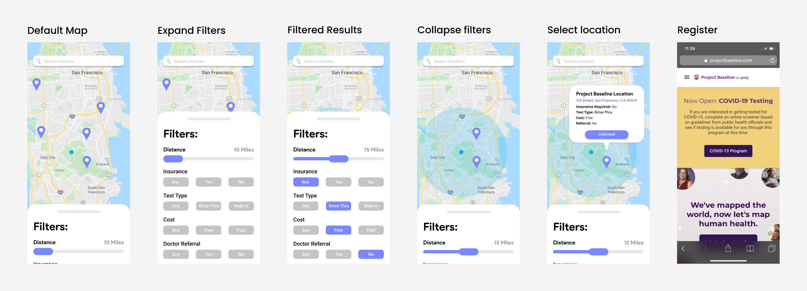
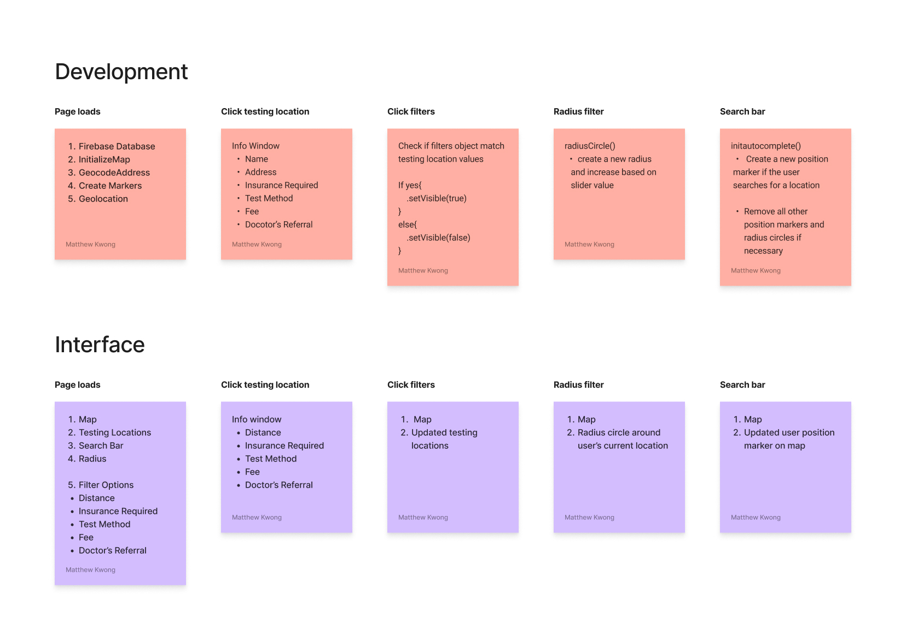
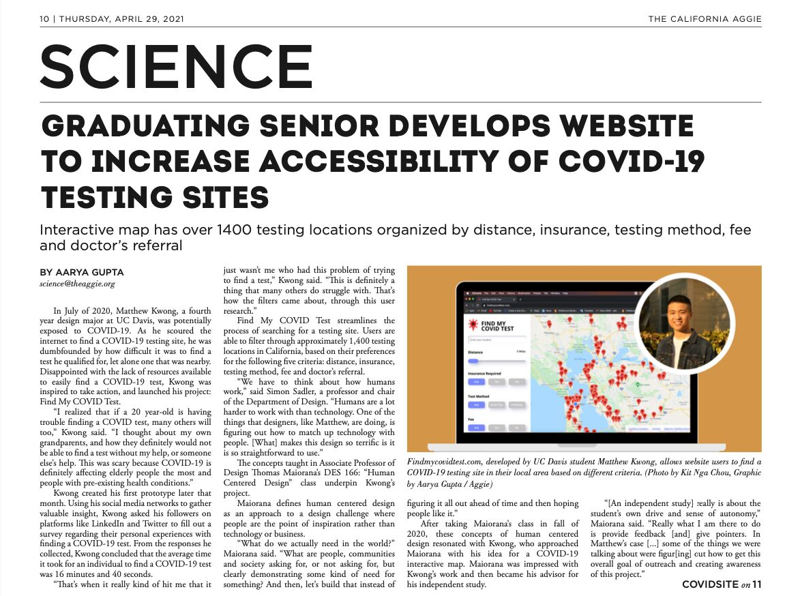

Creating an accessible one-stop solution to find COVID-19 testing in California.
My Role:
Lead Product Designer, Lead Developer
Duration:
1 Year
Platforms:
Desktop Web, Mobile Web
Skills:
Product Design, Full-stack Development,
User Research, Visual Design, Prototyping
Solution preview
Making a difference in the world
After countless all-nighters, I designed and developed Find My COVID Test,
a web app that improves the accessibility of finding a COVID-19 testing center in California based on the user's
preferences for distance, insurance coverage, testing method, fee, and doctor's referral.
Impact
Find My COVID Test reduced the average test registration time by 96% (15 minutes to 34 seconds).
Problem
It’s impossible to find a COVID test that you qualify for
Due to the COVID-19 pandemic, millions of people around the world have had to get tested. After a possible exposure in my family, I struggled to find a testing center near me. I realized that if a technological 20-year-old was having trouble, others would too.
Research
Understanding user needs
To learn more about other people’s experience registering for a COVID-19 testing center, I conducted an online research study surveying 39 past COVID-19 testing patients. From this survey, I found that
on average it took users approximately 15 minutes to find a testing center and register for an appointment.
Additionally, the most difficult parts of the process were:
finding the testing registration website
finding a nearby testing center
needing a doctor's referral
Research
Target Audience
While creating my target audience, I needed to keep in mind the average internet user's age.
Additionally, using the information on the
Centers for Disease Control and Prevention (CDC) website,
I found that adults of any age with pre-existing health conditions such as asthma, COPD, obesity,
liver disease, or smoke have a higher risk of contracting COVID-19. For these reasons, my target audience was:
Age: 30-50 Years old
Gender: Male/Female
High risk to COVID-19
No insurance
Has car
Not tech savvy

Problem Statement
How might I reduce friction of finding a COVID-19 test for a
diverse crowd of people (age, insurance status, income, etc.)?
First Solution
Designing a prototype
Through my first prototype, I had acknowledged all of the user’s highest requests, allowing them to schedule and register for a COVID-19 testing appointment within seconds.
I created a simple and easy-to-use user interface that would satisfy my target audience because of its simplicity, multi-step process, and large signifying buttons/symbols.
Finding a location
Loading the application, users would be presented with a map of testing locations. Clicking each map pin would then open a slide up modal with information about the testing location such as distance, cost, and if insurance was required.

Warnings
To confirm that users understand the necessary criteria to register for an appointment,
an alert screen appears to confirm with users about the necessary criteria to meet in order to qualify for this COVID testing site.

Appointment time
Once users press the continue button from the warnings page, users are able to see a calendar with available
appointment times to take their COVID test.

Registration
After choosing a time, users are presented with a registration form that asks for their personal information
to sign up for their appointment.

Success
Finally, a success screen is shown to the user, as well as an email confirmation that their appointment is set!

Design for a reason
To make a difference in the world, this would have to be a real application.
However, I realized that if this remained a prototype, it would have no tangible effect in making a difference for people around the world.
Using my knowledge in HTML, CSS, and JavaScript, I knew that I needed to turn this into a real life responsive website that would be able to meet the needs of all potential users.
Sketches
Drawing a desktop experience that's easy to use
Using my pre-existing mobile prototype for reference, I went on my iPad and drew some quick sketches of what the desktop website might look like.
Given more screen real estate, I came up with the idea to have a filtering menu on the left side of the page to allow users to quickly and easily find a COVID testing center that met their personal needs.

High Fidelity
Desktop prototype
After creating wireframes of the website, I transformed them into high-fidelity mock-ups to create a Figma prototype.
Additionally, after compiling a list of testing centers in California, I omitted the filtering option of Appointment because
every testing center required an appointment. Additionally, I added a search bar feature that
allows users to find testing centers in a desired city.
High Fidelity
Mobile screens
Using my original prototype and new desktop designs, I created a design for the mobile view of Find My COVID Test. It was extremely important to me that I was able to adapt the same
ease of use as the desktop view into the mobile design.

Development
Developing a product that can save lives
After finalizing the design for the website, I spent 6 weeks developing the Find My COVID Test website using HTML, CSS, and JavaScript.
To manage the testing location data, I learned how to use Google Firebase Database. This data is then plotted onto the map using the Google Maps API.
Below is a basic level flow-diagram that explains how the user interface components and development functions interact as the website is being used.

User testing
Receiving feedback
To ensure that the product was usable for all ages and demographics I conducted a user test on a working MVP prototype with 10 people between the ages 20-55.
Based on the user testing results and feedback, I made the following revisions to my design:
Cost was rewritten to Fee and Test Type to Test Method.
Default the filter buttons to select “Any” to clearly illustrate that no filters were applied.
Zoom-in and zoom-out buttons on the map for both mobile and desktop users.
Testing center address would be clickable, linking the user directly to Google Maps where they’d be able to find out how far a testing center was from their current location.
Final solution
Making a difference in the world
After implementing these changes to code and countless all-nighters, I had successfully developed Find My COVID Test and launched it publicly on September 8, 2020!
Update
More work to be done
From January - March 2021, I continued working on Find My COVID Test to work on outreach and expanding the test location database.
At the end of my independent study, I was able to partner with 2 of the largest testing organizations in California,
Verily- Project Baseline and Curative. With their help,
Find My COVID Test now has over 1,100 testing locations to choose from!
Additionally, I was featured in an article by the University of California, Davis Letters and Sciences
and the California Aggie newspaper!

Reflection
Looking back on the biggest project I've made
I have never been more proud of a project and I’m glad that I’ve been able to positively impact the community. Being able to see first hand what I was making and being involved in 100% of the process has been a surreal experience.
The biggest challenge by far was being the only designer and developer of this project.
Thank You
Thank you to those who supported me along the way
Thank you, Blake Brown, Jeremy Chang-Yoo, Joli Chien, Kit Nga Chou, Thomas Hernandez, Linda Huang, Francis Kong, Hannah McKelson,
Sam Louderback, Thomas Pham, Marcela San Juan, Aileen Yang, and many more for their feedback and support along the way.